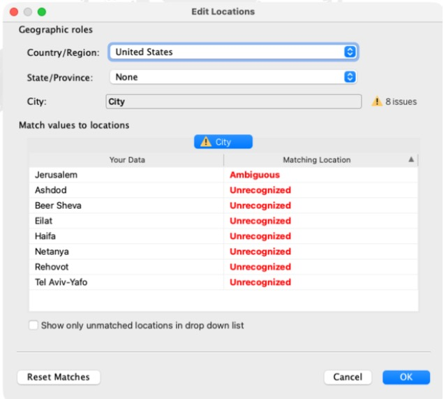
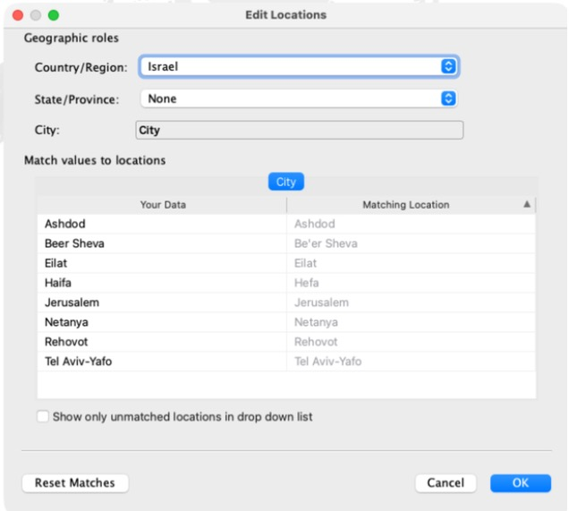
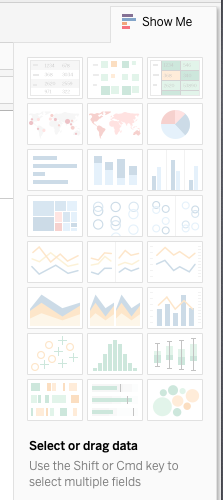
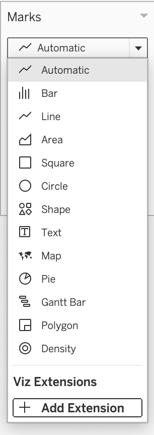
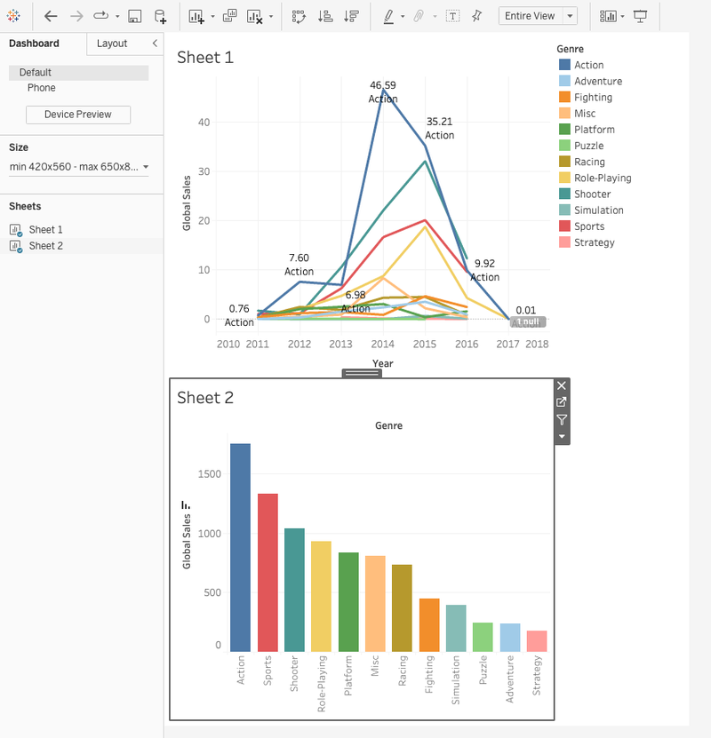

?teacher=1 בכתובת הדף: מה לומר, איפה לעצור ומה לבדוק לפני שממשיכים.בונים מה נבנה במודול הזה. מפה של Scoop & Go: שמונה ערים, וכל עיר היא סימן עגול על המפה. גודל הסימן הוא המכירות וצבע הסימן הוא הרווח. מעל זה שכבה של שמות הערים, מסנן לפי שנה, ובסוף מפה ועמודות באותו דשבורד, כשלחיצה על עיר מסננת את העמודות. בסוף תענו על שאלה עסקית במספר שחישבתם בעצמכם.
מה צריך להיות מוכן. Tableau Public על המחשב, חוברת הקורס scoop-course.twbx (ממודול 1), והקובץ scoop_sales_2024_2025.csv (אותו קובץ של המודולים הקודמים). כדאי להכיר ממודולים 3 עד 6 את המדפים, כרטיס Marks ומסנן. המפות של Tableau צריכות חיבור לאינטרנט, אז בדקו שיש לכם.
דבר אחד שכדאי לדעת מראש: כשמציירים את הערים של Scoop & Go בפעם הראשונה, Tableau לא מזהה אף אחת מהן. בפינת המפה כתוב 8 unknown. זה לא באג אצלכם: Tableau מחפשת את השמות בארצות הברית. בסעיף 3 מתקנים את זה בכמה לחיצות (Edit Locations... ואז מדינה Israel), ואחרי זה הכול עובד.
כל התרגילים כאן עובדים ב-Tableau Public בלבד. כשיש דרך לעקוף משהו שחסר לכם, היא כתובה בלי טריקים.
מתי שואלים ״איפה״
תל אביב מוכרת הכי הרבה. זה לא חדשות. השאלה הטובה יותר היא איפה משהו משתנה: איזו עיר מתקדמת, איזו נופלת, ואיפה בכלל אין לנו סניף.
ב-Scoop & Go יש תשעה סניפים בשמונה ערים. שמות הערים כתובים באנגלית בעמודה City, ויש עוד עמודה Region עם ארבעה אזורים שהרשת קבעה לעצמה (North, Center, South, Jerusalem). בקובץ אין שום קו רוחב וקו אורך. רק שמות. הנה מה שיש לנו לכל עיר, מחושב מ-6,575 שורות הקובץ:
| City | סניפים | שורות | Sales | Profit |
|---|---|---|---|---|
| Tel Aviv-Yafo | 2 | 2,305 | 83,640.10 | 43,289.60 |
| Jerusalem | 1 | 970 | 33,450.80 | 17,027.80 |
| Eilat | 1 | 866 | 31,473.70 | 15,741.20 |
| Haifa | 1 | 758 | 27,389.20 | 14,187.70 |
| Netanya | 1 | 732 | 26,840.20 | 13,507.70 |
| Beer Sheva | 1 | 525 | 18,797.20 | 9,589.20 |
| Rehovot | 1 | 280 | 9,925.20 | 4,794.70 |
| Ashdod | 1 | 139 | 5,304.50 | 2,585.00 |
| סך הכול | 9 | 6,575 | 236,820.90 | 120,722.90 |
Marks שכבר מכירים. דוגמה: סימן שגודלו 83,640 יושב על תל אביב.זו המפה שנבנה בהמשך. כאן היא בצורה סכמטית: מיקומי הערים מקורבים, וצורת החוף מצוירת בקירוב, בלי גבולות. זו לא המפה של Tableau, רק תמונה של מה שאנחנו הולכים להשיג.
לכל סוג שאלה יש גרף שמתאים לו. איפה? ומי שכן של מי? זה מפה. כמה? ומי ראשון? זה עמודות. מתי? זה קו. מודול זה בונה מפות, ובסעיף 7 נבדוק גם מתי עמודות ינצחו אותן.
איזו שאלה על Scoop & Go מתאימה למפה יותר מאשר לעמודות או לקו?
בטבלה למעלה רואים שתל אביב-יפו ראשונה ואשדוד אחרונה. מה מפה יכולה להראות לכם ששורות הטבלה לא יראו?
איך Tableau מבינה שהשם Haifa הוא עיר
בקובץ יש רק טקסט. ״Haifa״ זו מחרוזת, לא מקום. כדי לצייר סימן Tableau צריכה שני מספרים, ולכן קודם היא צריכה להבין שזה שם של עיר.
Geographic Role): תגית על שדה שאומרת ל-Tableau איזה סוג מקום יש בו: מדינה, מחוז, עיר, מיקוד ועוד. דוגמה: על City יש תפקיד City, ולכן Tableau מחפשת את הערכים שבו ברשימת הערים שלה.geocoding): התרגום של שם מקום לשני מספרים, קו רוחב וקו אורך, כדי שאפשר יהיה לשים סימן על מפה. דוגמה: ״Haifa״ הופך לנקודה על קו החוף בצפון.- שורה אחת בקובץ: City = Haifa. אין שם קו רוחב או קו אורך, רק שם.
- Tableau לוקחת את השם ומחפשת אותו ברשימת המקומות שמובנית בתוכנה, בתוך מדינה מסוימת. את המדינה קובעים בחלון
Edit Locations. אם לא קבעתם, יש ברירת מחדל, ואצלנו היא הייתהUnited States. שם לא תמצא את חיפה, ולכן בסעיף 3 נקבע Israel. - אם השם נמצא, חוזרים שני מספרים: קו רוחב וקו אורך. Tableau שמה אותם בשדות
Latitude (generated)ו-Longitude (generated), שכבר מחכים לכם בתחתית רשימת השדות. - עכשיו יש לסימן מקום: הוא מצויר על המפה. הנתונים עצמם לא השתנו, רק נוסף להם מיקום.
- אותו דבר קורה לכל שמונה הערים, וכל עיר מקבלת סימן.
- שם שלא נמצא, בגלל שגיאת כתיבה או בגלל שחיפשו אותו במדינה הלא נכונה, לא מקבל מיקום. Tableau לא ממציאה: היא מסמנת בפינת המפה כמה שמות
unknownיש.
ברגע שלשדה אחד יש תפקיד גיאוגרפי, Tableau מוסיפה לרשימת השדות שני שדות משלה: Latitude (generated) ו-Longitude (generated). המילה (generated) אומרת ש-Tableau יצרה אותם, והם לא היו בקובץ. הם מופיעים מיד כשהקובץ נטען, בתחתית רשימת המדדים, ומתמלאים במספרים רק כשהחיפוש מצליח. נראה אותם עוד מעט על המדפים.
ככה נראית חלונית הנתונים של Scoop & Go. בגרסה הזו הכותרת שלה היא Tables: הממדים למעלה, קו דק, והמדדים מתחתיו. שימו לב לסמל כדור הארץ ליד City, ולכך שליד Region ו-Branch כתוב Abc:
Tables
הדמיה סכמטית לפי הגרסה Tableau Public 2026.2. הרשימה מקוצרת (חסרים למשל Item, Order Date, Quantity). שדה הספירה בתחתית נקרא על שם הטבלה, scoop_sales_2024_2025.csv (Count). בגרסאות ישנות הוא נקרא Number of Records.
Region אצלנו הוא חלוקה של הרשת, לא מקום ש-Tableau מכירה. ״North״ ו-״Center״ הם לא ממש שמות של שטחים במאגר שלה, לכן אי אפשר לצבוע אותם במפה. כשתרצו לצבוע אזורים, צריך שדה שהוא באמת שטח: מדינה, מחוז או מיקוד. נחזור לזה בסעיף 6.
- פתחו Tableau Public והתחברו לקובץ
scoop_sales_2024_2025.csv(בחלוניתConnect,Text file). למה: אנחנו עובדים על אותם נתונים של המודולים הקודמים. - עברו ל-
Sheet 1ושימו לב לחלונית Data בצד שמאל. למה: שם רואים את סוג כל שדה לפי הסמל שלידו. - חפשו ליד
Cityסמל של כדור הארץ. לידBranchו-RegionכתובAbc. למה: רק City קיבל תפקיד גיאוגרפי. Tableau נותנת אותו לבד, לפי שם העמודה. - גללו לתחתית הרשימה, מתחת לקו הדק. למה: שם יושבים
Latitude (generated)ו-Longitude (generated), בכתב נטוי, שני השדות ש-Tableau יצרה בגלל City. - לחצו בכפתור הימני על
CityופתחוGeographic Role. למה: זה המקום לשנות או להוסיף תפקיד כשהזיהוי האוטומטי טועה. אל תשנו כלום עכשיו.
תוצאה צפויה: סמל כדור הארץ ליד City בלבד, ורשימת תפקידים שבה City מסומן. ליד Branch, Region ו-Channel: Abc. בתחתית הרשימה שני שדות (generated). אם אצלכם ליד City אין סמל, בחרו ידנית Geographic Role > City.
זו מכונה זעירה שמדגימה את שלוש התוצאות האפשריות: שם שנמצא, שם עם כמה מועמדים, ושם שלא נמצא. המילון שלה קטן וחלקו בדוי, והיא לא אומרת מה Tableau מכירה. לחצו על אחת הדוגמאות, ואז הוסיפו מדינה ובדקו מה קורה.
טעות נפוצה: ״Tableau תבין״. שם בלי הקשר הוא לא תמיד מקום אחד. ״Paris״ ו-״Springfield״ הם שמות של כמה מקומות. הפתרון הוא לא לשנות את השם אלא לתת הקשר: להוסיף עמודת מדינה (ולפעמים מחוז) ולתת גם לה תפקיד גיאוגרפי. ב-Scoop & Go כל השמות ייחודיים, אבל תבדקו תמיד, כי המפה לא צועקת כשהיא טועה בשקט.
גם אפליקציית ניווט עושה בדיוק את זה: כותבים כתובת, והיא מתרגמת אותה לנקודה על המפה לפני שמציירת משהו. בכל כלי שמציג מפה יש שלב כזה, והשגיאות הנפוצות בו הן שם עם שגיאת כתיבה, שם עם כמה התאמות, ושם בשפה שהמאגר לא מכיר.
מה סמל כדור הארץ ליד שדה ב-Data pane אומר?
לחיצה כפולה אחת וכבר יש מפה
מפה נבנית בשלוש פעולות: לחיצה כפולה על שדה גיאוגרפי, קביעת המדינה פעם אחת ב-Edit Locations..., ומדד לכרטיס Marks. עם הערים של Scoop & Go השלב האמצעי הוא חובה.
symbol map): מפה שבה כל מקום הוא סימן אחד, ואפשר לשנות לו גודל וצבע לפי מדד. דוגמה: עיגול גדול לתל אביב-יפו ועיגול קטן לאשדוד, כי המכירות שלהן שונות מאוד.כשמניחים שדה גיאוגרפי על הגיליון, Tableau עושה לבד שלושה דברים. היא מוסיפה את Longitude (generated) ל-Columns, את Latitude (generated) ל-Rows, ומניחה את City ב-Detail. תזכורת ממודול 3: Detail קובע כמה סימנים יהיו. סימן אחד לכל ערך שונה של City, אז 8 ערים, 8 סימנים. אבל רק אחרי שהערים זוהו.
מה שקורה בפועל עם Scoop & Go: מופיעה מפת עולם בלי אף סימן, ובפינה הימנית התחתונה 8 unknown. הסיבה: בחלון Edit Locations המדינה (Country/Region) מוגדרת כברירת מחדל ל-United States, ושם אין Haifa או Eilat. Jerusalem מסומנת Ambiguous והשאר Unrecognized. התיקון:
Tables
Marks
- שני שדות ה-
(generated)הם המיקום שנמצא לכל עיר. אפשר גם לראות אותם בחלונית Data. - על המדפים: אורך ב-Columns ורוחב ב-Rows. כמו ציר x וציר y, אבל של כדור הארץ.
- הכרטיס Marks: City ב-Detail קובע שיהיו 8 סימנים, Sales קובע גודל, Profit קובע צבע.
- שורת המצב בתחתית: ״8 marks״, ואין סימון unknown בפינה. זה המצב אחרי התיקון ב-Edit Locations.
- בחוברת הקורס צרו גיליון חדש: הסמל הראשון אחרי הלשוניות בתחתית (
New Worksheet). למה: מתחילים מגיליון ריק, כדי לראות מה Tableau מניחה בעצמה. - לחצו פעמיים על
Cityבחלונית הנתונים. למה: לחיצה כפולה על שדה גיאוגרפי מציירת מפה. תוצאה:Longitude (generated)ב-Columns,Latitude (generated)ב-Rows, City ב-Detail, מפת עולם בלי סימנים, ובפינה הימנית התחתונה8 unknown. - לחצו על
8 unknown. נפתח החלוןSpecial Values for [City]: ״There are 8 values that have unknown geographic locations.״ בחרוEdit Locations.... למה: רוצים לתקן.Filter dataהיה מוציא את שמונה הערים מהתצוגה ומהחישובים. - בחלון
Edit Locationsקראו:Country/RegionהואUnited States, ליד City כתוב8 issues, JerusalemAmbiguousושבע הערים האחרותUnrecognized. למה: רואים את הסיבה לפני שמתקנים. - פתחו את הרשימה של
Country/Region, בחרוFixed:ואזIsrael. למה: מעכשיו Tableau מחפשת את השמות בישראל. תוצאה: כל שמונה השורות מותאמות: Beer Sheva ל-Be'er Sheva, Haifa ל-Hefa, והשאר באותו שם. האזהרה8 issuesנעלמת. - לחצו
OK. למה: שומרים את ההתאמה בחוברת. תוצאה: המפה מתמקדת בישראל, ושורת המצב מציגה 8 marks. - גררו
SalesאלSizeו-ProfitאלColor. למה: הגודל מראה מכירות והצבע רווח. - עברו עם העכבר על תל אביב-יפו ועל אשדוד. למה: זה הצ׳קפוינט מול הטבלה של סעיף 1.
תוצאה צפויה: שורת המצב: 8 marks 1 row by 1 column SUM(Profit): 120,723. התיבה מעל תל אביב-יפו: City: Tel Aviv-Yafo / Profit: 43,290 / Sales: 83,640 (בקובץ 43,289.6 ו-83,640.1, והתיבה מעגלת לשלמים). אשדוד היא העיגול הקטן והבהיר ביותר: Sales 5,305 ו-Profit 2,585. במקרא של Size הטווח 5,305 עד 83,640, ובמקרא של Color 2,585 עד 43,290.
התיקון נשמר בחוברת, לא בקובץ ה-CSV. בחוברת חדשה עושים אותו שוב. דרך אחרת היא להוסיף לקובץ עמודה Country עם הערך Israel, ולבחור ב-Country/Region את From field: Country.
8 unknown בפינה הימנית התחתונה, והחלון Special Values for [City] עם שלוש האפשרויות: Edit Locations... (״Correct the unknown locations.״), Filter data ו-Show data at default position.
Country/Region הוא United States, ליד City 8 issues. Jerusalem Ambiguous, השאר Unrecognized.
Fixed: Israel כל השמונה מותאמות. Beer Sheva ל-Be'er Sheva, Haifa ל-Hefa.מפת ישראל, 8 marks
Full Price ממודול 8. אצלכם הוא עוד לא קיים.)שימו לב שהצבע (Profit) מספר בדיוק את אותו סיפור של הגודל (Sales). בתל אביב יש הכי הרבה מכירות, ולכן גם הכי הרבה רווח במספרים מוחלטים. הצבע נראה כאילו הוא מוסיף מידע, אבל הוא רק מחזיר לנו את הגודל. כדי שהצבע יוסיף משהו צריך מדד אחר, למשל אחוז הרווח. כך נעשה בסעיף 8.
דרך אחרת להגיע לאותה מפה היא Show Me. בוחרים את השדה הגיאוגרפי (ואפשר גם מדד, עם Ctrl או Cmd) ובוחרים את אחד האריחים של המפות:

Show Me בלי שדה נבחר, ולכן האריחים חלשים. בשורה השנייה שני האריחים השמאליים הם מפת סמלים ומפה צבועה. כשבוחרים שדה גיאוגרפי הם נדלקים.ועכשיו שאלה שהמפה לא עונה עליה. יש 8 סימנים, אבל 9 סניפים. איפה הסניף התשיעי? הנה מקום לבדוק את זה בלי מפה. זה Tableau זעירה: הניחו City על Detail וראו כמה Marks יש, ואז הוסיפו גם Branch.
במפה יש City על Detail ו-8 סימנים. מה יקרה אם נוסיף גם Branch ל-Detail?
מפת עולם בלי סימנים, ו-unknown בפינה: זו לא בעיית אינטרנט. זו המדינה ב-Edit Locations (שלבים 3 עד 6). המפה ריקה או אפורה בלי unknown: אם רואים רק רקע אפור, או שהסימנים מרחפים בלי מפה מאחוריהם, בדרך כלל חסר חיבור לאינטרנט, או שרשת המכללה חוסמת. Tableau Public צריכה גישה לרשת בשביל מפות. בדקו חיבור, נסו רשת אחרת, ואם זה לא עוזר בקשו עזרה לפני שמתחילים לחפש טעות בגיליון.
כשהמפה לא מזהה: unknown, עברית וקואורדינטות
בנתונים אמיתיים יש שמות עם שגיאות כתיבה, שמות בעברית, וסניפים שאין להם בכלל שם של עיר. צריך לדעת מה עושים כשסימן לא מגיע למפה, והרבה פעמים הפתרון הבטוח הוא לתת ל-Tableau את המיקום עצמו, כשני מספרים.
עברית: זה עדיין פתוח. Tableau Public מציגה טקסט בעברית בלי בעיה, אבל לא בדקנו אם היא מצליחה לזהות שמות מקומות בעברית, ואין לנו מקור רשמי שמאשר את זה. בשם הזהירות: אל תבנו מפה על שמות עבריים בלי ניסוי. לכן ב-Scoop & Go שמות הערים באנגלית. הדרכים הבטוחות מופיעות למטה, ובהמשך יש ניסוי קטן שבו אתם בודקים את זה בעצמכם.
איך נראה שם שלא זוהה
כשחלק מהשמות לא נמצאים, Tableau לא מצייר אותם, ובפינה הימנית התחתונה של המפה מופיע סימון כמו 2 unknown. לחיצה עליו פותחת את החלון שראיתם בסעיף 3, עם Edit Locations..., Filter data ו-Show data at default position. את אותו חלון אפשר לפתוח גם מהתפריט Map > Edit Locations.... בטבלה Match values to locations לוחצים על שורה Unrecognized ובוחרים מהרשימה מקום מוכר, או Enter a Latitude and Longitude....
| City (שם בקובץ) | Match to Known Location |
|---|---|
| Haifaa | Haifa, Israel ▾ |
| Netanyah | Enter latitude and longitude |
דוגמה בדויה: שני שמות עם שגיאות כתיבה. הרעיון: לכל שם שלא זוהה בוחרים התאמה לשם מוכר, או מקלידים קו רוחב וקו אורך. זה לא בהכרח מה שיופיע אצלכם.
התיקון הזה נשמר בתוך חוברת העבודה ולא בקובץ הנתונים. מי שיקבל מחר את אותו קובץ יצטרך לתקן שוב. ולכן, בדרך כלל, עדיף לתקן את הנתונים עצמם.
קו רוחב וקו אורך
Latitude) וקו אורך (Longitude): שני מספרים שקובעים נקודה על כדור הארץ. קו רוחב אומר כמה צפונה מקו המשווה, וקו אורך אומר כמה מזרחה מקו גריניץ׳. דוגמה: חיפה היא בערך 32.8 ו-35.0, כלומר צפונה מהמשווה ומזרחה מגריניץ׳. כל זוג כזה נקרא קואורדינטות.הסדר חשוב. ב-Tableau קו האורך הולך על Columns (ציר אופקי, מערב למזרח) וקו הרוחב על Rows (ציר אנכי, דרום לצפון). כמו (x, y): קודם אורך ואז רוחב. בטקסטים רבים כותבים דווקא קודם רוחב, וזה מקור לבלבול.
- קו האורך (Longitude) הוא הציר האופקי:
Columns. ככל שהמספר גדול יותר, הנקודה מזרחית יותר. - קו הרוחב (Latitude) הוא הציר האנכי:
Rows. ככל שהמספר גדול יותר, הנקודה צפונית יותר. - חיפה היא בערך 34.99 באורך ו-32.79 ברוחב, ולכן יושבת במקום הזה על הרשת.
- אם בטעות מחליפים בין העמודות, חיפה מקבלת רוחב 34.99 ואורך 32.79, והסימן נוחת באזור קפריסין, מערבה בים.
- בדיקת שפיות: ערים בישראל נמצאות בטווח צר. מספר מחוץ לטווח הזה הוא רמז לטעות.
איזה שדה הולך על Columns בכל מפה ב-Tableau?
ארבע דרכים בטוחות להביא מיקום
| הדרך | מתי | מה צריך |
|---|---|---|
| עמודת שם באנגלית לצד העברית | יש שמות מוכרים, אבל כתובים בעברית | עמודה נוספת בקובץ. כך Scoop & Go בנויה |
| עמודת מדינה (ולפעמים מחוז) | השם עמום, כמו ״Springfield״ | עמודה נוספת, ותפקיד גיאוגרפי גם לה |
| קובץ קואורדינטות | השם לא מזוהה, או שאין שם בכלל (סניף, כתובת) | קובץ שני עם City, Latitude, Longitude, וקישור ביניהם |
| Edit Locations בתוך Tableau | תיקון מהיר של כמה שמות בודדים | הקלדה ידנית, נשמרת בחוברת בלבד |
ננסה עכשיו את הדרך השלישית, כי היא עובדת תמיד, וגם מלמדת מה Tableau עושה מאחורי הקלעים. שימו לב שהיא לא תלויה במאגר המקומות של Tableau, ולכן אין בה שום דבר שצריך לבדוק מראש.
העתיקו את הטקסט הבא לקובץ טקסט ושמרו אותו בשם scoop_city_coords.csv. הקואורדינטות מקורבות ומציינות את מרכז העיר, מספיק טוב לתרגיל, לא למדידה:
City,Latitude,Longitude Tel Aviv-Yafo,32.0853,34.7818 Jerusalem,31.7683,35.2137 Haifa,32.7940,34.9896 Beer Sheva,31.2530,34.7915 Eilat,29.5577,34.9519 Netanya,32.3215,34.8532 Rehovot,31.8928,34.8113 Ashdod,31.8044,34.6553
- הדביקו את הטקסט בעורך טקסט ושמרו כ-
scoop_city_coords.csv. ב-Windows (Notepad):Save AsעםEncoding: UTF-8. ב-Mac (TextEdit): קודםFormat > Make Plain Text. אפשר גם להדביק ב-Excel ולשמור כ-CSV UTF-8. למה: בקובץ הזה אין עברית, אבל כדאי להתרגל לשמור תמיד ב-UTF-8. תוצאה: קובץ של 9 שורות (כותרת ועוד 8 ערים). - ב-Tableau Public עברו ללשונית
Data Source(בתחתית החלון). בחלוניתConnectionsלחצוAddובחרוText file, ואז את הקובץ החדש. למה: עכשיו שני קבצים מחוברים לאותה חוברת. בגרסה שלכם הכפתור עשוי להיקרא קצת אחרת. - גררו את הטבלה החדשה אל הקנבס, ליד טבלת Scoop. תראו קו שמחבר ביניהן (קשר,
relationship). ודאו שהשדה המחבר הואCityבשני הצדדים. אם Tableau לא בחרה לבד, לחצו על הקו ובחרו City. למה: כך Tableau יודעת לאיזו עיר שייך כל זוג קואורדינטות. קישורים בין קבצים מוסברים ביסודיות במודול 11. - עברו לגיליון חדש. בחלונית Data מופיעות עכשיו שתי טבלאות. בטבלת הקואורדינטות, ליד
Latitudeו-Longitudeאמורים להופיע סמלי כדור הארץ (Tableau מזהה לבד לפי השם). למה: ככה Tableau יודעת שאלה מספרים של מיקום. - לחצו פעמיים על
Latitudeואז עלLongitude. הפילים יעלו ל-Rowsול-Columns(בדרך כלל כ-AVG או SUM). למה: אורך ורוחב הם ה-x וה-y של המפה. - עכשיו המפה מציגה סימן אחד בלבד (עם AVG הוא ייפול איפשהו באמצע הארץ, ועם SUM הוא ייפול מחוץ למפה). גררו את
CityאלDetail. למה: בלי City ב-Detail Tableau מסכמת את כל השורות לנקודה אחת. עם City יש סימן לכל עיר. - גררו
SalesאלSizeו-ProfitאלColor, ועברו עם העכבר על תל אביב-יפו. למה: זה אותו צ׳קפוינט של סעיף 3.
תוצאה צפויה: 8 marks בדיוק באותם מקומות כמו במפה של סעיף 3. מעל תל אביב-יפו: Sales כ-83,640.1 ו-Profit כ-43,289.6. אם הקואורדינטות לא נקראו נכון תראו סימן בודד באמצע האוקיינוס, או כל הסימנים בקו אחד: בדקו שלא החלפתם בין Latitude ל-Longitude.
אם אתם מעדיפים לא לחבר שני קבצים: פתחו את scoop_sales_2024_2025.xlsx ב-Excel, הוסיפו בעמודות חדשות Latitude ו-Longitude לפי City (VLOOKUP או XLOOKUP מגיליון נפרד שבו שמרתם את 8 השורות), ושמרו כקובץ חדש. התוצאה זהה.
סימן אחד באמצע האוקיינוס. אם חיברתם את הקבצים ב-Join ולא ב-relationship, קואורדינטות העיר מועתקות לכל שורה בקובץ. לתל אביב-יפו יש 2,305 שורות, ולכן SUM(Latitude) יוצא 32.0853 × 2,305 = 73,956.6, מספר שלא קיים על מפה. הפתרון: לשנות את האגרגציה של הפיל ל-Average, וכך כל עיר מקבלת את הקואורדינטה שלה בחזרה. בדיוק בגלל זה לקשר (relationship) יש יתרון כאן.
בתל אביב-יפו שני סניפים, Dizengoff ו-Port, אבל במפה לפי City הם סימן אחד. איך הייתם ממפים את התשעה סניפים, כל אחד במקומו?
ניסוי: האם עברית עובדת?
הנה השאלה שלא ענינו, ועכשיו אפשר לבדוק אותה בעצמכם. התוצאה לא נקבעה מראש, ולכן כל תשובה היא תשובה טובה.
City_He,Sales תל אביב-יפו,83640.1 ירושלים,33450.8 אילת,31473.7 חיפה,27389.2 נתניה,26840.2 באר שבע,18797.2 רחובות,9925.2 אשדוד,5304.5
- שמרו את הטקסט כ-
hebrew_cities.csvבקידוד UTF-8 (ב-Excel:CSV UTF-8). למה: בקידוד אחר העברית תהפוך לג׳יבריש, ואז בודקים קידוד ולא מפות. - התחברו אל הקובץ בחוברת חדשה, וגררו את
City HeאלRows. תוצאה: 8 שורות בעברית קריאה. אם יש ג׳יבריש, חזרו לשלב 1. - אם ליד
City Heאין סמל כדור הארץ: לחצו ימני,Geographic Role > City. למה: לתת ל-Tableau את התפקיד ידנית. - נקו את הגיליון, וצרו מפה בלחיצה כפולה על
City He. קראו את שורת המצב ואת הפינה הימנית התחתונה.
תוצאה: אחת משלוש: 8 marks בלי unknown, כמה שמות unknown, או כולם unknown. אנחנו לא יודעים איזו מהן תקבלו. רשמו מה קיבלתם ואיזו גרסה של Tableau Public אצלכם. אם הסימנים הופיעו, ודאו שכל אחד במקום הנכון על המפה (למשל חיפה בצפון על החוף), כי התאמה שגויה נראית כמו התאמה טובה. אם יצא unknown, אתם יודעים למה Scoop & Go מחזיקה עמודת אנגלית.
אם רוצים תוויות בעברית על המפה, אפשר לשמור את הגיאוקידוד על העמודה האנגלית, ולהציג בעברית את עמודת השם (למשל על Label). לפי מדריכים מקובלים אפשר גם להשתמש ב-Aliases (שם תצוגה בעברית על ערך באנגלית), אבל בדקו אצלכם איך זה מתנהג.
שני שמות עיר לא זוהו במפה, ובחוברת הזאת יש רק קובץ אחד. מה הדרך הבטוחה ביותר להמשיך?
בצוותי נתונים מקובל להוסיף קואורדינטות לקובץ עוד לפני שהוא מגיע לכלי הוויזואליזציה. כתובות של לקוחות או סניפים נשמרות עם קו רוחב וקו אורך, ואז כל כלי יכול לצייר אותן, בלי תלות במאגר שמות של כלי מסוים. כך גם נמנעים משינויים כשהכלי מתעדכן.
איך המפה נראית: רקע, סימנים ושכבות
מפה לא צריכה להיראות כמו מפה של נהג. התפקיד שלה להבליט את הנתונים שלכם, ולכן קודם מחלישים את הרקע, ואחר כך מטפלים בסימנים.
background layer): מה שמצויר מאחורי הסימנים שלכם, כמו חופים, גבולות, כבישים ושמות. דוגמה: לכבות את שמות המדינות, כדי שלא יתחרו בשמות הערים שלכם.את הרקע משנים מהתפריט Map > Background Layers..., שפותח את החלונית Map Layers (עם Style: ו-Washout:). החלונית שנפתחת מחליפה זמנית את חלונית Data. שלושה סגנונות רקע לדוגמה, בהדמיה סכמטית:
Normal
צבעוני. הרקע מתחרה בסימנים.
Light
מחליש את הרקע. בדרך כלל הבחירה הטובה למפת נתונים.
Dark
צבעים בהירים בולטים. מתאים לדשבורד כהה.
איורים סכמטיים בלבד. השמות והמראה המדויקים של הסגנונות אצלכם עשויים להיות שונים.
- במפה של סעיף 3 (או 4) פתחו
Map > Background Layers...(החלוניתMap Layers). למה: שם כל הגדרות הרקע. - בחרו
Styleבהיר (Light), ואם אין,Normal. למה: רקע חיוור מבליט סימנים צבעוניים. - בטלו שכבות רקע שאתם לא צריכים: שמות מדינות, ושמות מקומות אם מופיעים. למה: לא רוצים טקסט של הרקע שיתחרה בשמות הערים שלכם.
- אם יש מחוון
Washout, הזיזו אותו קצת למעלה. למה: זה מחליש את הרקע עוד, בלי לגעת בסימנים. - בכרטיס Marks:
Color > Opacityבערך 70%, והוסיפוBorder. למה: עיגולים שחופפים (תל אביב-יפו, רחובות, אשדוד קרובות) נשארים נראים זה דרך זה. - בכרטיס Marks:
Size, והזיזו את המחוון עד שאשדוד נראית, ותל אביב-יפו לא מכסה את שכנותיה לגמרי. למה: גודל מוחלט תלוי בכם, והיחסים בין העיגולים נשמרים. - גררו
CityאלLabel. למה: שמות ליד הנקודות. - גללו עם העכבר כדי להתקרב, וגררו כדי להזיז. חפשו את סרגל הכלים של המפה כשהעכבר עליה. למה: להכיר את הזום, ולדעת איך חוזרים לתצוגה הכללית.
תוצאה צפויה: אף מספר לא משתנה. עדיין 8 marks, ובתיבת הכלים עדיין Sales 83,640.1 לתל אביב-יפו. המפה בהירה, בלי שמות מדינות, והעיגולים שקופים בחלקם.
בכרטיס Marks יש גם סוגי סימן שיש רק במפות. התפריט הזה נראה ככה:

Map (ממלא שטחים) ו-Density (מפת צפיפות). את שניהם נראה בסעיף 6. בינתיים נשארים עם Automatic, שהוא עיגולים לנקודות.ציר כפול: שתי שכבות על אותה מפה
Dual Axis): שני סימנים על אותו גיליון, כל אחד עם כרטיס Marks משלו. במפה זה אומר שתי שכבות זו על זו. דוגמה: שכבה אחת של עיגולים לפי מכירות, ומעליה שכבה של שמות הערים.בשביל שמונה נקודות שכבה אחת מספיקה: אפשר לשים גם גודל וגם צבע וגם תווית בכרטיס אחד. ציר כפול שווה את המאמץ כשצריך שני סוגי סימן שונים, למשל שטחים צבועים ועליהם נקודות, או כשרוצים שהתוויות יהיו בלתי תלויות בעיגולים. אנחנו נבנה אותו עכשיו כי זו הטכניקה, ונשתמש בה כדי לשים שכבת תוויות נפרדת.
- מתחילים ממפה פשוטה:
Cityעל Detail, ועל המדפים Longitude ו-Latitude. שמונה נקודות. Salesעל Size: העיגולים גדלים לפי המכירות. עד כאן שכבה אחת, וכל ההגדרות יושבות בכרטיס אחד.- מעתיקים את הפיל Longitude ב-Columns (Ctrl או Cmd וגרירה). עכשיו הכרטיס Marks מתפצל ללשוניות:
All, ולכל עותק לשונית משלו. - לחיצה ימנית על העותק השני ו-
Dual Axis. שתי השכבות יושבות על אותה מפה, זו על זו. השכבה השנייה עדיין מציירת עיגולים, כאן נקודות קטנות. - בלשונית של השכבה השנייה בוחרים סוג סימן
Textושמים City על Label. עכשיו התחתונה היא עיגולים והעליונה היא שמות, ולכל שכבה כרטיס Marks משלה.
- במפה שלכם גררו את הפיל Longitude מ-
Columnsימינה, עם Ctrl (ב-Mac: Cmd) לחוץ, כדי להעתיק אותו. למה: עותק שני של הפיל יהיה השכבה השנייה. תוצאה: ב-Columns שני פילים, ובכרטיס Marks לשוניותAllושתי לשוניות נוספות. - לחצו ימני על הפיל השני ובחרו
Dual Axis. למה: זה מה שהופך את שני העותקים לשתי שכבות על אותה מפה. אם הסימנים לא נראים מיושרים: לחצו ימני על הציר השניSynchronize Axis. - לחצו על הלשונית של השכבה הראשונה, וודאו ש-
Sizeהוא Sales ו-Colorהוא Profit. אם הם נמצאים בלשוניתAll, גררו אותם אל הלשונית הראשונה. למה: כך הגודל והצבע ישפיעו רק על העיגולים, לא על הטקסט. - לחצו על הלשונית של השכבה השנייה. שנו את סוג הסימן ל-
Text, והניחוCityעלLabel. אם הטקסט ענק או צבוע בצבעים של Profit, הסירו אתSizeו-Colorמהלשונית הזו. למה: כל שכבה מציירת משהו אחר, ולכן מגדירים כל אחת בנפרד. - חזרו ללשונית הראשונה והוסיפו שקיפות (
Opacity) 60% בערך. למה: כך שמות הערים שמתחת לעיגול גדול עדיין קריאים.
תוצאה צפויה: עיגולים בגודל המכירות ועליהם שמות הערים, כל אחד במקומו. התיבה כשעוברים על עיגול מציגה שוב Sales 83,640.1 לתל אביב-יפו. שורת המצב עשויה להציג 16 marks (שמונה בכל שכבה). זה תקין, כי עכשיו יש שתי שכבות. שמות שנוגעים זה בזה (תל אביב-יפו, רחובות, אשדוד) הם בעיה אמיתית, ועל זה בסעיף 8.
בדקו אם זמין אצלכם: Marks layers. בתיעוד של Tableau מתוארת דרך חדשה יותר להוסיף שכבות: גוררים שדה גיאוגרפי אל Add a Marks Layer בפינה של המפה, ולכל שכבה Marks card משלה. בתיעוד הדף מצוין עבור Desktop, Cloud ו-Server, ולא ברור שהוא זמין ב-Tableau Public. הציר הכפול שבנינו הוא דרך מוכרת וותיקה, ולכן אין צורך להסתמך על Marks layers.
״ציר כפול״ במפות הוא בעצם שכבות. אין כאן שני צירים של מספרים. הסיבה להשתמש בו היא סוגי סימן שונים, למשל שטחים צבועים בשכבה אחת ונקודות בשכבה אחרת, או תוויות שנפרדות מהעיגולים. כשמספיקה שכבה אחת, אל תוסיפו שכבה שנייה.
ציר כפול כשלא צריך. במודולים הבאים תראו ציר כפול גם בגרפים רגילים, ושם הוא גורם לטעויות כשהצירים לא מסונכרנים ומשווים שני סולמות שונים. במפה אין בעיה כזו, אבל הכלל זהה: שני סימנים על גיליון אחד הם עוד דבר שהצופה צריך להבין. אם הוא לא מוסיף מידע, מוותרים עליו.
הפעלתם ציר כפול על מפה. מה הסיבה הטובה ביותר לעשות את זה?
Map > Map Layers ואילו סגנונות רקע זמינים ב-Public, (2) שהמחוון Washout קיים, (3) אם שורת המצב מציגה 16 marks עם ציר כפול, (4) שהצעד ״Synchronize Axis״ נדרש רק אצל קואורדינטות בהתאמה אישית, ובמקרה של שדות generated לא. (5) האם Marks layers זמין ב-Public. אל תלמדו אותו כתרגיל חובה. אחרי שלב 3 כדאי לעצור ולוודא שכולם רואים את הלשוניות בכרטיס Marks. זה הצעד שבו מתבלבלים הכי הרבה.צבועה, צפיפות וקבצים מרחביים
עד עכשיו כל סימן היה נקודה. יש עוד שלוש משפחות: שטחים צבועים, כתמי צפיפות, וצורות שמגיעות מקובץ. לכל אחת שאלה שהיא עונה עליה, ושגיאה אופיינית.
| סוג | מה מצויר | מה צריך בנתונים | מתאים ל... | זהירות |
|---|---|---|---|---|
| סמלים | נקודה לכל מקום | שם מקום או קואורדינטות | סכומים לפי מקום | סימנים שחופפים |
| צבועה | שטח שלם צבוע | שדה ברמת שטח: מדינה, מחוז, מיקוד | שיעורים ואחוזים | שטח גדול נראה חשוב גם כשהוא לא |
| צפיפות | כתם צבע לפי ריכוז | הרבה נקודות מדויקות | איפה יש הרבה אירועים | זה ריכוז, לא ערך |
| קובץ מרחבי | צורות מהקובץ: נקודות, קווים, שטחים | קובץ shapefile, KML או GeoJSON | גבולות שאין ב-Tableau, מסלולים | קבצים חסרים, מערכות קואורדינטות שונות |
מפה צבועה
filled map): מפה שבה שטחים שלמים, כמו מדינות, מחוזות או מיקודים, נצבעים לפי מדד. דוגמה: כל מחוז בצבע לפי אחוז הלקוחות שקנו באפליקציה, והמחוז הכהה הוא הגבוה.כדי למלא שטח, Tableau צריכה שדה שהוא באמת שטח: מדינה (Country/Region), מחוז (State/Province), מיקוד ועוד. ב-Scoop & Go אין שדה כזה. City הוא נקודה, ולכן אין מה למלא, ו-Region הוא חלוקה של הרשת שלא קיימת במאגר של Tableau. זו הסיבה שאין בכרטיס שלנו מפה צבועה אמיתית, ולא כי המפה הצבועה פחות טובה.
הנה איך נראית מפה צבועה, בדוגמה בדויה לגמרי: שלושה אזורים בלי שמות אמיתיים, וצבע לפי שיעור בדוי.
הדרך ב-Tableau, לפי התיעוד הרשמי: לחיצה כפולה על שדה כמו State, סוג סימן Map, ומדד אל Color. כשהמדד הוא אחוז, שמים אותו על Color ומשנים את האגרגציה שלו ל-Attribute, כדי שלא יסוכם. כדי להתאמן, כל קובץ עם עמודת State, Country או מחוז מתאים. אל תבנו על זה את התרגיל שלנו, כי ב-Scoop & Go אין שדה כזה.
הכלל המקובל בהנחיות העיצוב של Tableau: מפת סמלים לסכומים, מפה צבועה לשיעורים. סכום מעורר חשד כשמצמידים אותו לשטח, כי שטח גדול ייראה חשוב. שיעור לא תלוי בגודל השטח, ולכן ראוי לצבע. מי שמציג ״מספר חולים לפי מחוז״ במפה צבועה, מראה בעצם איפה גרים אנשים. שיעור לכל 100 אלף תושבים כבר עונה על שאלה אחרת.
למה אי אפשר לבנות ב-Scoop & Go מפה צבועה לפי City?
מפת צפיפות
density map): במקום לצייר כל סימן, Tableau מציירת כתם צבע שמראה איפה הסימנים מצטופפים. דוגמה: מאה אלף כתובות של משלוחים, וכתם חם במקום שבו יש הכי הרבה.היא עובדת טוב על הרבה נקודות מדויקות, למשל כתובות או מיקומי אירועים. היא לא מראה ערך של מדד, רק ריכוז. אצלנו כל ההזמנות של עיר יושבות על מרכז העיר (אין לנו כתובות), ולכן צפיפות כאן היא סתם גודל העיר מצויר מחדש. הדמיה קצרה מראה בדיוק את זה, עם כתובות מדומות:
כל נקודה היא הזמנה אחת, והמספר לכל עיר הוא מספר ההזמנות האמיתי מהקובץ (סך הכול 6,575). המיקומים מדומים: הם מפוזרים באקראי סביב מרכז העיר, כדי להראות איך המפה תיראה אילו היו לנו כתובות. כשהפיזור 0, כל ההזמנות של עיר יושבות על נקודה אחת, וזה המצב האמיתי שלנו.
- במפה שלכם: לחצו ימני על לשונית הגיליון ובחרו
Duplicate. למה: שומרים את מפת הסמלים כמות שהיא ומנסים צפיפות בעותק. - בעותק: הוציאו את
Salesמ-SizeואתProfitמ-Color(גררו אותם החוצה). למה: עכשיו כל סימן הוא הזמנה אחת, לא עיר. - גררו
Order IDאלDetail. אם מופיעה אזהרה על הרבה ערכים, בחרוAdd all members. למה: כל Order ID שונה, ולכן סימן אחד לכל שורה. תוצאה: שורת המצב מציגה 6,575 marks. - בכרטיס Marks שנו את סוג הסימן ל-
Density. פתחו אתColorושחקו עם צבע ועם המחווןIntensity. למה: זה שיוצר את הכתמים. - חזרו לסוג סימן רגיל (
Circle) והשוו. למה: כדי לראות מה צפיפות מוסיפה.
תוצאה צפויה: בצפיפות, שמונה כתמים: הכי חזק בתל אביב-יפו (2,305 הזמנות), אחריו ירושלים (970) ואילת (866). בנקודות, 6,575 עיגולים שיושבים בדיוק אחד על השני, ולכן רואים רק שמונה עיגולים. אין פה תגלית: הנתונים שלנו ברמת עיר, והצפיפות רק משקפת כמה הזמנות יש בכל עיר.
צפיפות היא ריכוז, לא ערך. כתם חם אומר ״הרבה סימנים כאן״ ולא ״הרבה כסף כאן״. סימן אחד של הזמנה גדולה והמון סימנים של הזמנות קטנות נראים אחרת במפת צפיפות ממה שהם נראים בסכום. ואם הנקודות לא מדויקות (מרכז עיר במקום כתובת), הכתם מטעה לגבי המקום.
קבצים מרחביים
spatial file): קובץ שמחזיק צורות, כלומר נקודות, קווים ושטחים, ולא רק טבלה. דוגמה: קובץ שבו כל שכונה בעיר היא מצולע, עם שם השכונה לצידה.Tableau Public מתחברת לארבעה סוגי קבצים כאלה: Esri Shapefile, KML, GeoJSON ו-MapInfo. ב-shapefile חייבים כמה קבצים ביחד (.shp, .shx, .dbf, .prj), או קובץ .zip שמכיל אותם. ההתחברות היא דרך Connect > Spatial file בתוכנת Desktop. שימו לב: לפי התיעוד, ההעלאה של קבצים מרחביים דרך עריכת הרשת (בדפדפן) לא נתמכת, ולכן עובדים בתוכנה. אחרי ההתחברות מופיע שדה בשם Geometry, ולחיצה כפולה עליו מציירת את הצורות.
מי שרוצה לחבר טבלת קואורדינטות לקובץ מרחבי ולהצליב ביניהם יכול להשתמש בפונקציה MAKEPOINT, שבונה נקודה משני מספרים. בדקו אם זמין אצלכם. אנחנו לא נשתמש בה בתרגילים.
ניסוי קטן, אופציונלי: קובץ GeoJSON של שמונה הערים. שימו לב לסדר: ב-GeoJSON כותבים קודם אורך ואחר כך רוחב, הפוך מהסדר שרגילים אליו.
{"type":"FeatureCollection","features":[
{"type":"Feature","properties":{"name":"Tel Aviv-Yafo","sales":83640.1},"geometry":{"type":"Point","coordinates":[34.7818,32.0853]}},
{"type":"Feature","properties":{"name":"Jerusalem","sales":33450.8},"geometry":{"type":"Point","coordinates":[35.2137,31.7683]}},
{"type":"Feature","properties":{"name":"Eilat","sales":31473.7},"geometry":{"type":"Point","coordinates":[34.9519,29.5577]}},
{"type":"Feature","properties":{"name":"Haifa","sales":27389.2},"geometry":{"type":"Point","coordinates":[34.9896,32.7940]}},
{"type":"Feature","properties":{"name":"Netanya","sales":26840.2},"geometry":{"type":"Point","coordinates":[34.8532,32.3215]}},
{"type":"Feature","properties":{"name":"Beer Sheva","sales":18797.2},"geometry":{"type":"Point","coordinates":[34.7915,31.2530]}},
{"type":"Feature","properties":{"name":"Rehovot","sales":9925.2},"geometry":{"type":"Point","coordinates":[34.8113,31.8928]}},
{"type":"Feature","properties":{"name":"Ashdod","sales":5304.5},"geometry":{"type":"Point","coordinates":[34.6553,31.8044]}}
]}
אופציונלי: בדקו אם זמין אצלכם. אם לא מצליח, אפשר לדלג, שום תרגיל אחר לא תלוי בזה.
- שמרו את הטקסט כקובץ טקסט רגיל בשם
scoop_cities.geojson. למה: זה פורמט טקסט, והסיומת היא מה שמזהה אותו. - ב-Tableau Public:
Connect > Spatial file, ובחרו את הקובץ. למה: זה המחבר לקבצים מרחביים. - בדף Data Source בדקו אילו עמודות הופיעו. תוצאה:
name,salesושדהGeometry. - בגיליון: לחצו פעמיים על
Geometry. למה: זה מה שמצייר את הצורות.
תוצאה צפויה: 8 marks על המפה. אם הסימנים נוחתים באזור קפריסין, או בתוך הים, אתם עושים את טעות סדר הקואורדינטות הקלאסית: אורך, ואחר כך רוחב.
שני כשלים אופייניים בקבצים מרחביים. (1) shapefile שחסר בו אחד הקבצים הנלווים: Tableau לא תצליח לקרוא אותו, ולכן מעבירים את כולם יחד, או כ-.zip. (2) חיבור בין שני מקורות עם מערכות קואורדינטות שונות: הצורות לא נופלות זו על זו. כשמשהו לא מתיישר, התחילו בבדיקה של שני אלה.
סוג המפה נקבע לפי השאלה והנתונים, לא לפי מה שנראה יפה. סכומים בנקודות: סמלים. שיעורים לפי שטח: מפה צבועה. איפה יש הכי הרבה אירועים: צפיפות, אבל רק עם נקודות מדויקות. גבול או מסלול שלא קיים ב-Tableau: קובץ מרחבי.
מפת צפיפות של Scoop & Go, כשכל הזמנה מקבלת את מרכז העיר שלה, תראה:
מתי עמודות עונות טוב יותר
מפה נראית מרשימה, ולכן קל להשתמש בה כשלא צריך. שאלו את עצמכם: האם המיקום הוא חלק מהשאלה? אם רק רוצים לדעת מי ראשון ומי אחרון, עמודות ממוינות עונות על זה בשנייה.
הנה אותם שמונה מספרים בשתי צורות. בשמאל, השטח של כל עיגול לפי Sales. בימין, האורך של כל עמודה. נסו לענות על שתי שאלות בכל צד: מי שלישית, אילת או חיפה? וכמה קטנה אשדוד מרחובות?
עכשיו תבנו את זה בעצמכם. במיני Tableau תבנו עמודות אופקיות של Sales לפי City, ממוינות:
- בחוברת של Tableau Public פתחו גיליון חדש. גררו
CityאלRowsו-SalesאלColumns. למה: עמודות אופקיות, כמו במודול 3. - לחצו על סמל המיון בסרגל הכלים (מהגדול לקטן). למה: הסדר הוא שירות לקורא, לא קישוט.
- גררו
Order DateאלColumns, שמאלה מ-SUM(Sales), ובחרו שנה (Year) רגילה, לא רציפה. למה: שנה בכותרת מפצלת את הגרף לשני חלונות, אחד לכל שנה. השוואה בין שנים בלי להסתיר מי קיים.
תוצאה צפויה: בשלב 2 הסדר הוא: Tel Aviv-Yafo 83,640.1, Jerusalem 33,450.8, Eilat 31,473.7, Haifa 27,389.2, Netanya 26,840.2, Beer Sheva 18,797.2, Rehovot 9,925.2, Ashdod 5,304.5. בשלב 3 שני חלונות: ב-2024 שש עמודות (אין רחובות ואשדוד), וב-2025 שמונה. Beer Sheva: כ-11,108.8 ב-2024 וכ-7,688.4 ב-2025, והיא העמודה היחידה שקצרה יותר ב-2025. שימו לב שהסיפור הזה לא נראה במפה שבנינו עד עכשיו.
איזה גרף לאיזו שאלה
| השאלה | הגרף | למה |
|---|---|---|
| מי ראשונה ומי אחרונה? | עמודות ממוינות | אורך קל להשוואה, והסדר ברור |
| איך זה השתנה בין שנים? | קו, או עמודות לפי שנה | הזמן הוא הציר |
| איפה יש סניפים קרובים, איפה חור? | מפה | המיקום הוא השאלה |
| איפה הרשת חזקה, ומי השכנים של עיר חלשה? | מפה, ועמודות לצידה | המפה מראה איפה, העמודות כמה |
| כמה מכירות בכל אחד מ-100 סניפים? | עמודות, או טבלה | על מפה יהיו סימנים שחופפים |
מפה גוזלת הרבה מקום ונותנת מעט דיוק. בשביל שמונה ערים, עמודות ממוינות לוקחות הרבה פחות מקום ומראות יותר טוב מי ראשונה. המפה שווה את המקום כשיש שאלה של מיקום, קרבה או כיסוי, או כשהיא משמשת כמסנן בדשבורד (בסעיף 9).
מפה בשביל היופי. מי שמבקש ״מפה יפה לדשבורד״ לפעמים רוצה סתם משהו שנראה מקצועי. לפני שבונים, שאלו: איזו החלטה תיעשה בזכות המיקום? אם אין תשובה, בנו עמודות. ואם כן יש, בנו מפה, ועמודות לידה.
אנליסטים משלבים: מפה קטנה כמסנן או כמבט על הכיסוי, ולצידה טבלה או עמודות עם המספרים המדויקים. זה דפוס מקובל בדשבורדים של רשתות סניפים. המפה היא ההקשר, והמספרים נקראים בעמודות.
הנהלה של Scoop & Go מבקשת לשים מפה בדשבורד שכבר יש בו עמודות של מכירות לפי עיר. מה תשאלו אותם לפני שתסכימו?
הנהלה שואלת: ״איזו עיר שלישית במכירות, אילת או חיפה?״ איזה גרף יענה הכי טוב?
מפה שאומרת אמת: סכום או שיעור, שטח, היטל
מפה משכנעת בקלות, והיא גם מטעה בקלות. הסכנות הגדולות הן שלוש: להשוות סכומים כשצריך שיעורים, לתת לשטח או לגודל להרשים, ולשכוח שלא הכול על המפה.
סכום או שיעור
המפה של מכירות כוללות אומרת שתל אביב-יפו ענקית ואשדוד זעירה. זה נכון, אבל לא הוגן. תל אביב-יפו פעלה 24 חודשים עם שני סניפים. אשדוד פעלה שלושה חודשים בלבד (יוני עד אוגוסט 2025), ורחובות שבעה (מיוני עד דצמבר 2025). מי שרוצה להשוות עיר לעיר צריך מדד שמתחשב בזה, למשל מכירות לסניף לחודש פעיל. זה חישוב שלנו, לא משהו ש-Tableau עושה בעצמה, ומודול 8 מלמד איך בונים אותו כשדה מחושב. בינתיים, הדמיה על הנתונים האמיתיים:
המפה סכמטית: מיקומי הערים מקורבים וצורת החוף מקורבת. הגדלים והמספרים מחושבים עכשיו מקובץ Scoop & Go. שנו את התקופה ואת המדד, וראו מי גדולה בכל תצוגה.
- במפה שלכם לחצו ימני על לשונית הגיליון ובחרו
Duplicate, ובעותק הוציאו אתProfitמ-Color. למה: שומרים את המפה המקורית. - פתחו
Analysis > Create Calculated Field. שם:Profit Margin. נוסחה:SUM([Profit]) / SUM([Sales]). אשרו. למה: אחוז רווח הוא סכום רווח חלקי סכום מכירות, לא ממוצע של אחוזים. שדות מחושבים לעומק במודול 8. - לחצו ימני על השדה החדש בחלונית Data,
Default Properties > Number Format, ובחרו אחוזים עם שתי ספרות אחרי הנקודה. למה: שיוצג 51.80% ולא 0.518. - גררו את
Profit MarginאלColor. עברו עם העכבר על הערים, והסתכלו על המקרא. למה: זו מפה שבה הגודל הוא מכירות והצבע הוא אחוז רווח, בסוף משהו שלא מכפיל את הגודל. - לחצו ימני על המקרא,
Edit Colors, ופתחוAdvanced. סמנו והגדירו התחלה 0 וסוף 1 (כלומר 0% עד 100%). למה: ברירת המחדל של Tableau מותחת את הצבע בין הערך הקטן לגדול ביותר, ולכן הפרש קטן נראה גדול.
תוצאה צפויה: אחוזי הרווח: Haifa 51.80%, Tel Aviv-Yafo 51.76%, Beer Sheva 51.01%, Jerusalem 50.90%, Netanya 50.33%, Eilat 50.01%, Ashdod 48.73%, Rehovot 48.31%. בשלב 4 המקרא נע בערך מ-48.3% עד 51.8%, וצבעי הערים נראים שונים מאוד. בשלב 5, עם 0 עד 100%, כל העיגולים כמעט באותו גוון. ההפרש האמיתי הוא 3.5 נקודות אחוז בין הגבוהה לנמוכה.
צבע שמגזים. סקאלת הצבע של Tableau נמתחת בין הערך הנמוך לגבוה בנתונים. שמונה מספרים בין 48.3% ל-51.8% נראים כמו מפה עם פערים דרמטיים. תמיד קראו את המקרא: אם הטווח צר, או שאין פער, אמרו את זה בכותרת, או קבעו טווח הוגן.
בהדמיה, ב-2024 ו-2025 יחד, אשדוד (3 חודשים) יוצאת הכי גבוהה במכירות לסניף לחודש פעיל: 1,768.2, מעל תל אביב-יפו עם 1,742.5. האם אשדוד באמת הסניף הכי חזק?
מפת מכירות כוללות מראה את אשדוד כקטנה ביותר, ורחובות כשנייה מהסוף. מה עוזר להשוות הוגן יותר בין הערים?
שטח, גודל ומה שלא על המפה
כמה מלכודות קטנות, שכל אחת כבר נתקלתם בה בסעיפים הקודמים או תיתקלו בה כשתפרסמו:
העיגול הגדול מכסה את הקטנים. תל אביב-יפו, רחובות ואשדוד קרובות זו לזו ובמפה המלאה הסימנים שלהן חופפים. שקיפות, מסגרת וזום פותרים את זה חלקית. תוויות שנוגעות זו בזו הן סימן שצריך להקטין סימנים, או להוסיף עמודות לצד המפה.
שני סניפים, סימן אחד. במפה לפי City, Dizengoff (44,194.1) ו-Port (39,446.0) מצטרפים לסימן אחד של 83,640.1. הצופה לא יודע שיש שניים. אם זה חשוב להחלטה, הוסיפו Branch ל-Detail, או כתבו בכותרת ״לפי עיר״.
מה שלא זוהה נעלם בשקט. שם עיר שלא זוהה לא מצויר, והסכום שלו לא נספר במפה. שורת המצב ופינת ה-unknown הן הדרך היחידה לדעת. לפני שמפרסמים, תמיד בדקו שמספר הסימנים הוא המספר שציפיתם לו.
projection): הדרך להפוך את כדור הארץ לדף שטוח. כל דרך מעוותת משהו, שטח, צורה או מרחק. דוגמה: בהיטל Mercator, שמשמש מפות רבות באינטרנט, גרינלנד נראית ענקית בהרבה ממה שהיא.- עשר מעלות רוחב הן אותו מרחק על האדמה בכל מקום. על כדור הארץ כל הפסים האלה שווים. כך הם נראים, כאן בהדמיה.
- בהיטל Mercator כל פס נמתח יותר ככל שהוא רחוק יותר מהמשווה. הפס העליון כאן גבוה פי 2.4 מהתחתון, אף שהוא מייצג אותו מרחק. הנתונים נחשבו מהנוסחה של ההיטל.
- ישראל נמצאת בין קו רוחב 29.5 ל-33.3, פס צר. המתיחה בקצה הצפוני גבוהה בכ-4% מזו שבקצה הדרומי. אצלנו זה אפסי.
- רק במפת עולם הבעיה הזו חשובה: לא תשוו שטחים של מדינות בצפון הרחוק לשטחים בקרבת המשווה לפי מה שנראה לעין.
אצלנו זה לא משנה, כי כל הערים בפס צר. אבל אם תבנו מפה של מכירות לפי מדינה בעולם ותצבעו לפי גודל העיגול או השטח, תזכרו שהמראה של השטח יכול להטעות. שיעור, ולא סכום, מתאים לצביעת שטח.
בהנחיות העיצוב של Tableau מופיע הכלל: מפת סמלים לסכומים, מפה צבועה לשיעורים. מי שמצייר סכומים על שטחים מראה בעיקר איפה השטחים גדולים או איפה גרים הרבה אנשים. עיתונאי נתונים ואנליסטים נוהגים לנרמל, כלומר לחלק בגודל האוכלוסייה, השטח או הזמן, לפני שמציירים צבע לפי שטח.
לפני שמפרסמים מפה שאלו ארבע שאלות. האם הסימן סכום או שיעור? האם ההשוואה הוגנת (זמן, גודל, מספר סניפים)? האם כל הסימנים שציפיתם להם מופיעים? והאם הצבע או הגודל מגזימים את ההפרש? ארבע תשובות כן, והמפה אפשר לסמוך עליה.
האם ההיטל משנה את המפה של Scoop & Go?
מפה בדשבורד: לחיצה שמסננת
מפה בדשבורד היא לא רק תמונה. אפשר להפוך אותה לכפתורים: לוחצים על עיר, וכל שאר הגיליונות מתמקדים באותה עיר. זה הרבה פעמים התפקיד הכי טוב של מפה בדשבורד.
Use as Filter): הגדרה על גיליון בדשבורד שאומרת: מה שבוחרים כאן מסנן את שאר הגיליונות. דוגמה: לוחצים על ירושלים במפה, והעמודות מציגות רק את המכירות של ירושלים.נסו את זה לפני שבונים. מפה סכמטית משמאל, עמודות מימין: לחצו על עיר (Ctrl או Shift כדי להוסיף עוד אחת), ולחצו שוב על אותה עיר כדי לבטל. זו הדמיה של ההתנהגות, והמספרים אמיתיים מהקובץ.
בדשבורד אמיתי זה נעשה בשני שלבים: בונים גיליון מפה וגיליון עמודות, מניחים את שניהם בדשבורד, ומדליקים את ה-Use as Filter במפה. הסמל נמצא בסרגל הקטן שמופיע בפינה של גיליון נבחר:

Use as Filter. על המפה שלנו הוא נראה בדיוק אותו דבר.- במפה שלכם (המקורית, עם Size ו-Color) לחצו ימני על לשונית הגיליון,
Rename, וקראו להMap. למה: שמות ברורים עוזרים כשיש כמה גיליונות. - צרו גיליון חדש בשם
By Category:CategoryעלRows,SalesעלColumns, ממוין מהגדול לקטן. תוצאה: Cups 69,470.0, Drinks 54,553.3, Cones 48,317.0, Sundaes 47,037.2, Sticks 17,443.4. הסכום 236,820.9. - לחצו על סמל הגיליון החדש בתחתית ובחרו
New Dashboard. למה: זה הקנבס שבו מחברים גיליונות. - גררו מהרשימה משמאל את
Mapאל הקנבס, ואחר כך אתBy Categoryלצידה או מתחתיה. למה: שתיהן יופיעו יחד. - לחצו על המפה בדשבורד כדי לבחור אותה, ובפינה שלה לחצו על המשפך (
Use as Filter). למה: זה מה שמחבר בין המפה לעמודות. - לחצו על העיגול של ירושלים. למה: זו הבדיקה.
תוצאה צפויה: אחרי הלחיצה העמודות מציגות רק ירושלים: Cups 9,347.2, Drinks 7,971.3, Cones 7,219.7, Sundaes 6,324.6, Sticks 2,588.0, והסכום 33,450.8. שאר הערים נחלשות על המפה. לחיצה חוזרת על הבועה, או על רקע ריק, מחזירה את כל הרשת.
מסנן אחד לא מגיע לכל הגיליונות. אם הוספתם מסנן שנה לגיליון המפה בלבד, הוא לא יסנן את העמודות. הבחירה במפה (Use as Filter) ומסנן רגיל הם שני דברים שונים. כדי שמסנן שנה יפעל על כל הגיליונות, מגדירים אותו להתאים לכמה גיליונות, ולימוד מלא של דשבורדים יש במודול 13.
מפה שמשמשת כמסנן מרוויחה פעמיים: היא מראה את הגיאוגרפיה, והיא נותנת לקורא דרך להתמקד. בדשבורד עם הרבה גיליונות היא הופכת לתפריט: במקום רשימה נפתחת של ערים, לוחצים על העיר עצמה. זה הרבה פעמים הנימוק הכי טוב לשים מפה בדשבורד של שמונה ערים.
מפה שמסננת היא דפוס מקובל בדשבורדים של רשתות עם סניפים: על המפה הסניפים או האזורים, ולידה כרטיסים ועמודות שמתעדכנים לפי הבחירה. מפרסמים אותה ב-Tableau Public כדי שכל אחד יוכל ללחוץ. כל נתון שמוצג שם גלוי לכולם, ולכן משתמשים רק בנתונים הבדויים שלנו.
בדשבורד יש מפה ועמודות. לחצתם על העיגול של אילת, ושום דבר לא השתנה בעמודות. מה הסיבה הסבירה?
בונים ועונים: איפה אנחנו מאבדים קרקע
הנהלת Scoop & Go מסתכלת על המספר הכולל: המכירות ב-2025 עלו מ-107,047.6 ל-129,773.3. נשמע מצוין. השאלה: האם הצמיחה בכל הרשת, או שיש עיר שבה נופלים? וכמה בדיוק?
זה התרגיל המסכם של המודול. נבנה מפה, נשווה בין שנים, ואז נחשב בידיים מספר אחד שעונה על השאלה. כל שלב נבדק בתוצאה צפויה, כך שאפשר לדעת אם טעיתם לפני שמתקדמים.
שלב 1: נתונים, מפה, ובדיקת בסיס.
- פתחו חוברת חדשה ב-Tableau Public. התחברו אל
scoop_sales_2024_2025.csv. עבדו בחוברת הקורס, שבה City כבר מתוקן מסעיף 3. בחוברת חדשה חזרו על התיקון:8 unknown>Edit Locations...>Country/Region>Fixed:Israel >OK. למה: אנחנו בונים על מקור שאנחנו יודעים שעובד. - בגיליון חדש בשם
Check: גררוSalesאלText. אחר כך גררו אליו את שדה הספירה של הטבלה (בסוף רשימת המדדים:scoop_sales_2024_2025.csv (Count), בגרסאות ישנותNumber of Records). למה: בדיקת בסיס, כמו שעשינו בכל מודול. תוצאה: Sales 236,820.9 ו-6,575 שורות. - בגיליון חדש בשם
Mapבנו את המפה:Cityעל Detail (דרך לחיצה כפולה, או על קואורדינטות עם Latitude, Longitude),Salesעל Size,Profitעל Color. הפעילו Light, ושימו תוויות City. תוצאה: 8 marks בלי unknown (רק אחרי התיקון של Edit Locations).
שלב 2: מסנן שנה, והשוואה בין שנים.
- גררו
Order DateאלFilters, בחרוYears, ובחרו רק 2024. למה: כך המפה תראה שנה אחת בכל פעם. תוצאה: 6 marks. רחובות ואשדוד נעלמות, כי לא היה להן מה למכור ב-2024. - עברו עם העכבר על הערים וקראו את Sales מהתיבה. השוו לטבלה למטה.
- החליפו את המסנן ל-2025. תוצאה: 8 marks, וכל המספרים של 2025 מהטבלה.
- לחצו ימני על הפיל של המסנן,
Show Filter, ובתפריט של הכרטיס בחרו אפשרות של בחירה בודדת. למה: כך הצופה בדשבורד יחליף שנה בלי להיכנס לתוכנה.
| City | 2024 | 2025 | שינוי |
|---|---|---|---|
| Tel Aviv-Yafo | 39,723.1 | 43,917.0 | +10.6% |
| Jerusalem | 16,105.9 | 17,344.9 | +7.7% |
| Eilat | 14,548.1 | 16,925.6 | +16.3% |
| Haifa | 12,982.0 | 14,407.2 | +11.0% |
| Netanya | 12,579.7 | 14,260.5 | +13.4% |
| Beer Sheva | 11,108.8 | 7,688.4 | -30.8% |
| Rehovot | אין | 9,925.2 | עיר חדשה |
| Ashdod | אין | 5,304.5 | עיר חדשה |
| סך הכול | 107,047.6 | 129,773.3 | +21.2% |
Tableau עשויה להציג 2 ספרות אחרי הנקודה או לעגל לשלמים, לפי הפורמט. השינוי באחוזים אינו מוצג בתיבה, מחשבים אותו בידיים.
שלב 3: מחשבים את התשובה.
- בגיליון חדש בשם
Years:Order Date(שנה) עלRowsו-SalesעלText. תוצאה: 107,047.6 ו-129,773.3. עליית הרשת: 129,773.3 פחות 107,047.6 זה 22,725.7, כלומר 21.2%. - גררו
CityאלFiltersוהוציאו (Exclude) אתRehovotו-Ashdod. למה: שתי הערים האלה לא פעלו ב-2024, ולכן אי אפשר להשוות אותן. זו השוואה בין שש הערים שפעלו בשתי השנים. תוצאה: 107,047.6 ו-114,543.6. העלייה: 7,496.0 ו-7.0%. - בחלון הסינון של City בחרו רק את
Beer Sheva(במקום ההוצאה הקודמת). תוצאה: 11,108.8 ו-7,688.4. הירידה: 11,108.8 פחות 7,688.4 זה 3,420.4, כלומר 30.8%. (3,420.4 חלקי 11,108.8 הוא 0.3079.)
המספר שעונה על השאלה: באר שבע ירדה ב-3,420.4, כלומר ב-30.8%, והיא העיר היחידה שירדה.
שלב 4: איפה בשנה זה קרה? מפה לא עונה על זה, אבל עמודות כן.
- בגיליון חדש בשם
Beer Sheva by quarter: סננוCityל-Beer Sheva בלבד. גררוOrder DateאלColumnsפעמיים. בכל פיל פתחו את החץ ובחרו את רמת התאריך: באחדYearובשניQuarter, שתיהן מהסוג הרגיל (לא Continuous).SalesעלRows. למה: כותרות מקוננות של שנה ורבעון. - קראו את הרבעונים.
תוצאה צפויה: 2024: Q1 1,155.0, Q2 3,368.1, Q3 4,967.6, Q4 1,618.1. 2025: Q1 1,221.0, Q2 2,365.4, Q3 2,627.0, Q4 1,475.0. שני הרבעונים של האביב והקיץ (Q2 ו-Q3) ירדו מ-8,335.7 ל-4,992.4, ירידה של 3,343.3. זה כ-97.7% מכל הירידה השנתית (3,420.4). שאר השנה כמעט לא השתנתה.
הסיפור הוא לא ״המכירות עלו ב-21.2%״. הסיפור הוא שכמעט שני שלישים מהעלייה (15,229.7 מתוך 22,725.7) הגיעו משתי ערים שנפתחו ב-2025, ושעיר ותיקה אחת, באר שבע, ירדה בשליש, כמעט כולה בקיץ. ההנהלה רואה תמונה אחרת בלי המפה ובלי ההשוואה. מפה עוזרת לראות איפה, העמודות והחישוב אומרים כמה.
המשפט למנהל
הנה איך נראה סיכום של שלוש שורות, עם מספרים שאפשר לבדוק:
ההנהלה שואלת: ״האם לסגור את הסניף בבאר שבע?״ מה תבדקו בנתונים לפני שתענו, ומה אי אפשר לדעת מהם?
שלב 5: בדיקה אחרונה לפני שמראים למישהו.
- לכל גיליון כותרת שאומרת מה הוא מראה, למשל ״Sales לפי עיר, 2025״. למה: מי שרואה את המפה בלי הסבר לא יודע אם הגודל הוא מכירות או רווח.
- מקרא של Size קריא, ויחידות כמו בקובץ (המטבע לא מצוין בקובץ, ולכן לא כותבים סמל מטבע). למה: לא ממציאים יחידה.
- שורת המצב: מספר ה-marks שציפיתם לו (6 ב-2024, 8 ב-2025), ואין
unknown. למה: בדיקה שלא נעלמה עיר בשקט. - שימו מספר אחד בכותרת הדשבורד: ״באר שבע: מינוס 30.8%״ רק אם בדקתם אותו, ושאתם יכולים להסביר איך חישבתם.
תוצאה צפויה: שלושה גיליונות מסודרים (Map, Years, Beer Sheva by quarter), ובכל אחד מספרים שתואמים לטבלאות שבסעיף הזה.
איזה משפט נכון על הנתונים?
סיכום: מה עברנו במודול
- מפה מתחילה בשדה עם תפקיד גיאוגרפי (סמל כדור הארץ). לחיצה כפולה מוסיפה Longitude ו-Latitude (generated) ושמה City ב-Detail, ומספר ה-marks הוא מספר הערכים השונים.
- unknown לא נעלם בשקט. בדקו את שורת המצב ואת פינת המפה. עברית לא אומתה: בדקו בניסוי, ובנו על עמודה באנגלית, על מדינה לפני העיר, או על קואורדינטות.
- אורך (Longitude) הולך על Columns ורוחב (Latitude) על Rows. ב-GeoJSON הסדר הפוך: קודם אורך. בישראל הרוחב בין 29.5 ל-33.3 והאורך בין 34.3 ל-35.9.
- מחלישים את הרקע, משתמשים בשקיפות, ובציר כפול (שכבות) רק כשצריך שני סוגי סימן.
- סמלים לסכומים, מפה צבועה לשיעורים (על שדה שהוא שטח), צפיפות לנקודות מדויקות, וקובץ מרחבי לצורות שאין ב-Tableau.
- לא תמיד מפה: דירוג עדיף על עמודות. השוו בצורה הוגנת (לפי סניף וחודש פעיל), בדקו שכל הסימנים מופיעים, והשתמשו במפה גם כמסנן.
אחרי סינון ל-2024, המפה מציגה 6 marks במקום 8. למה?
מה נכון על זיהוי שמות מקומות בעברית ב-Tableau Public?
הסימן של באר שבע מציג 11,108.8 ב-2024 ו-7,688.4 ב-2025. מה הירידה, באחוזים?
קריאה נוספת, תיעוד רשמי של Tableau (באנגלית): Build a simple map Symbol map Filled map Density map Dual-axis map
לתרגול מפה צבועה על שטחים אמיתיים, בדף הדוגמאות של Tableau Public יש קבצים עם מדינות ומחוזות, למשל מפה של מדינות ארה״ב: Sample data. בדקו אם הקובץ נפתח אצלכם.
הבא: מודול 8: שדות מחושבים. שם נבנה את Profit Margin בצורה מסודרת, ואת המדד ״מכירות לסניף לחודש פעיל״ שהשתמשנו בו בהדמיה.